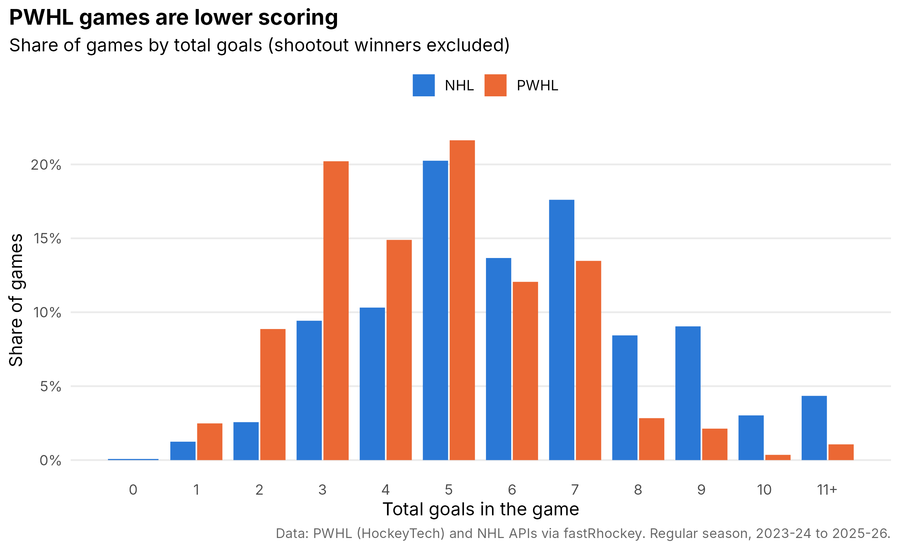
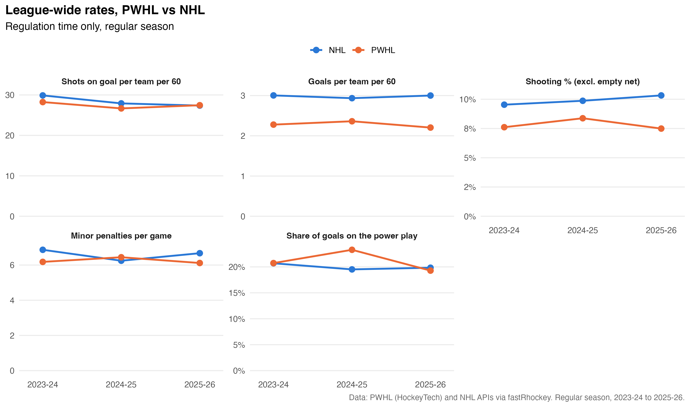
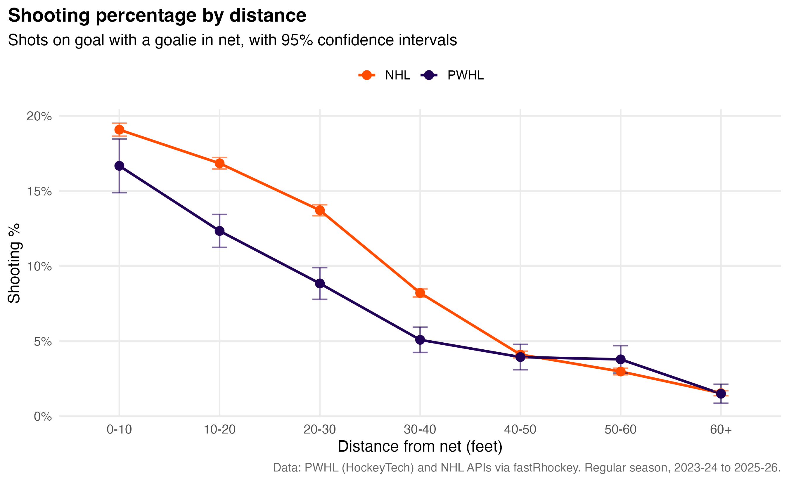
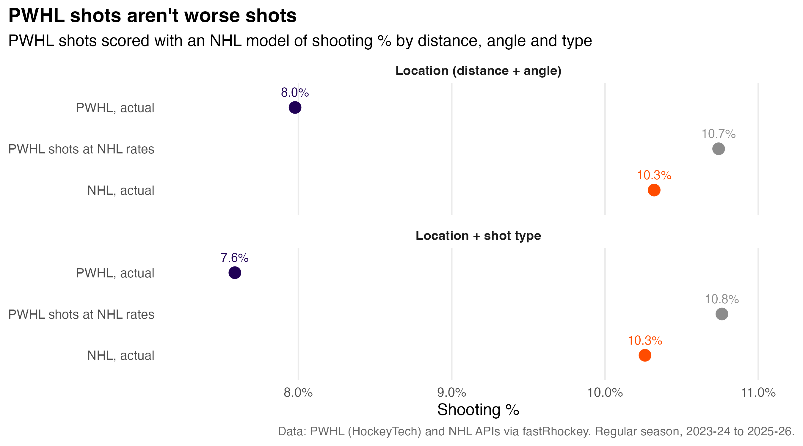
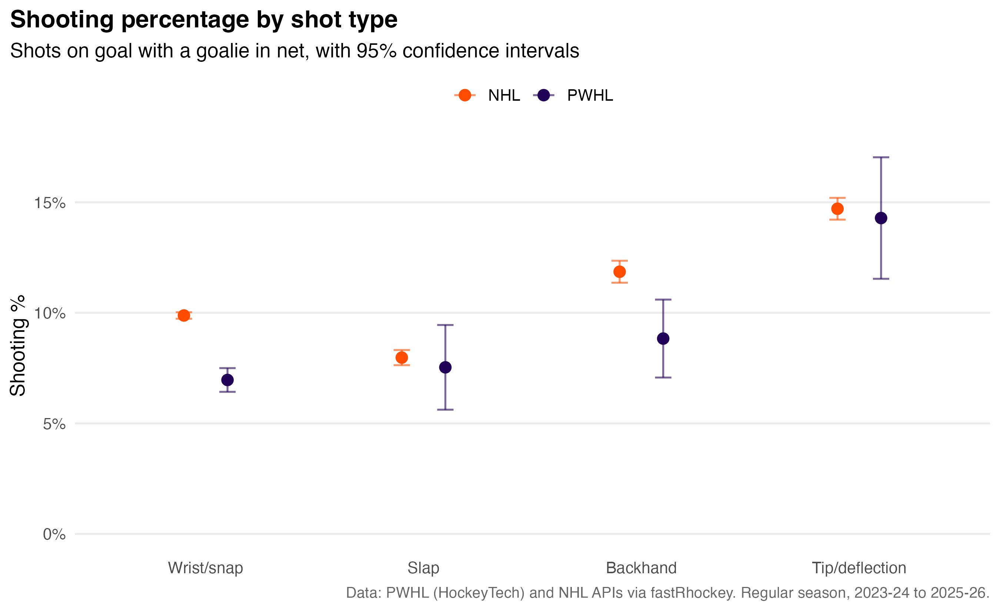
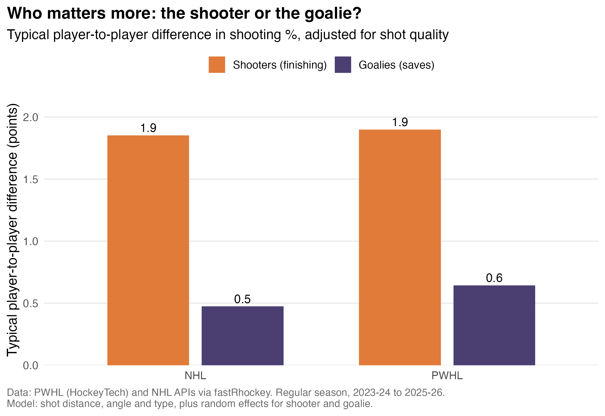

Regular seasons 2023-24 to 2025-26
Same shots.
Fewer goals.
The PWHL and the NHL put the same number of pucks on net, from the same parts of the ice. Women's pro hockey scores less because fewer of those shots go in.
| League | Goals per game |
Shots on goal per team, per 60 |
Shooting % | Save % | One-goal games |
|---|---|---|---|---|---|
| PWHL | 4.7 | 27.4 | 7.8% | .921 | 50% |
| NHL | 6.1 | 28.4 | 9.9% | .900 | 40% |
282 PWHL games and 3,936 NHL games. Shots are shots on goal; rates use regulation time.
Lower scoring, closer games
PWHL games average 4.7 goals to the NHL's 6.1. Half are decided by one goal (NHL: 40%), and 27% go past regulation (NHL: 22%).

Both leagues shoot just as often
Over the three seasons, teams in both leagues averaged 27 to 28 shots on goal every 60 minutes, so the gap isn't about how much teams shoot.

Close-in shots go in less often
A third of shots in both leagues come from within 20 feet, but PWHL shots convert less at every distance up to 40 feet. Beyond that, the leagues are level.

The shots aren't worse
If PWHL shots went in as often as NHL shots from the same distance, angle and shot type, they'd score 10.8% of the time. That's slightly more than the NHL's actual 10.3%. The gap is in finishing or goaltending, not shot selection.

Wrist shots and backhands make the gap
Slap shots and tips go in at about the same rate in both leagues. PWHL wrist shots (7.0% vs 9.9%) and backhands (8.8% vs 11.9%) don't.

The shooter matters more than the goalie
Within each league, after adjusting for shot quality, shooters differ from one another three to four times as much as goalies do.

Read with care
The PWHL has played far fewer games, so its numbers are less precise. The data also can't say how much of the league-wide gap belongs to shooters and how much to goalies, only which one varies more within a league.